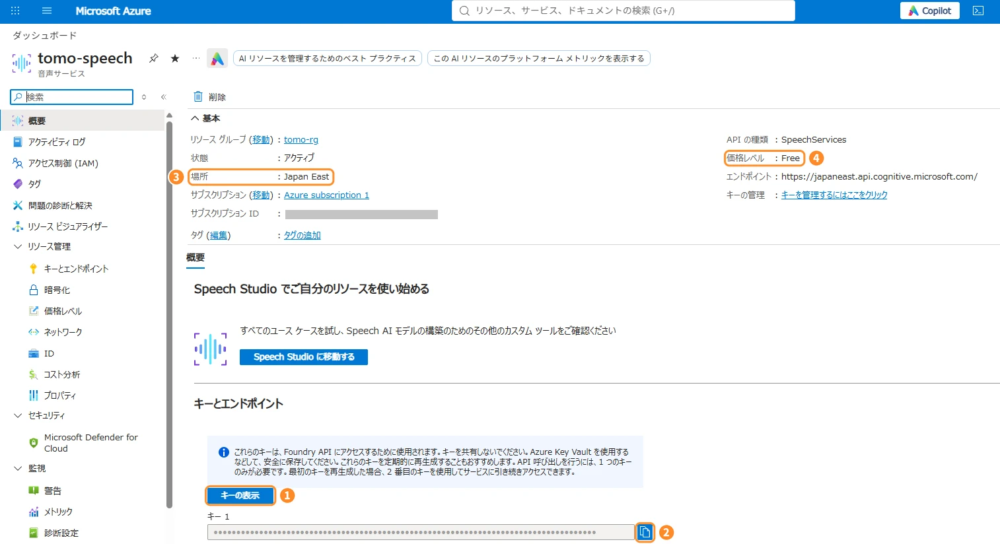
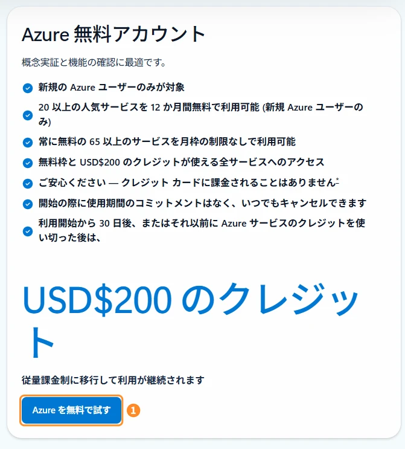
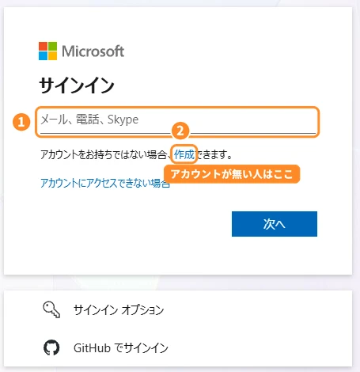
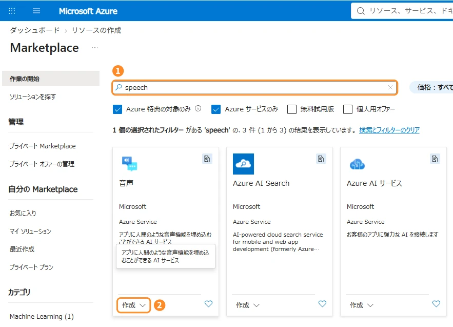
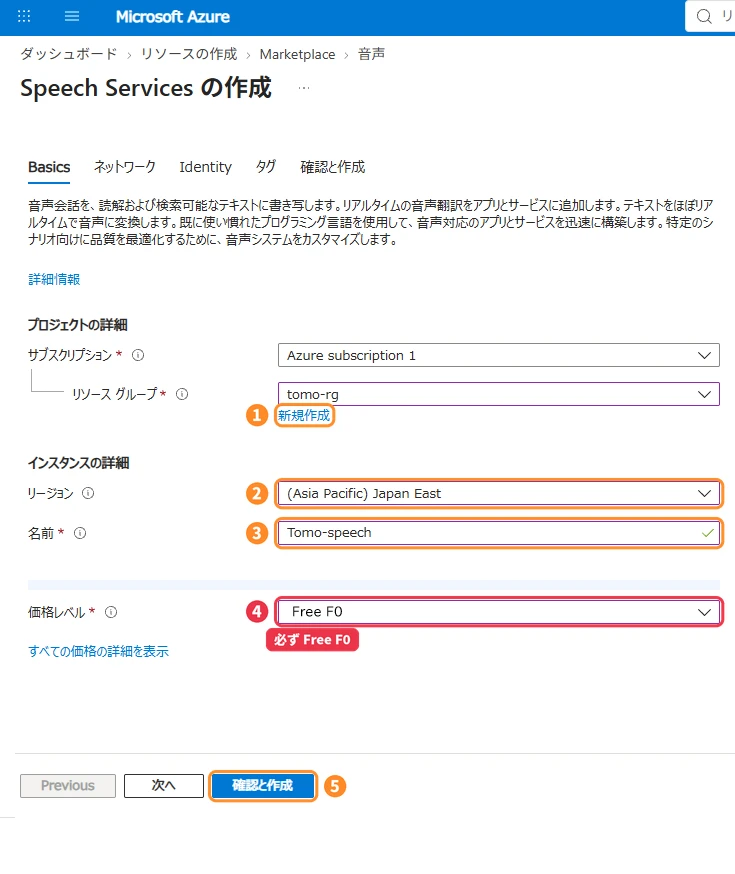

Azure Speech guide
キャラの「耳」と「声」のキーを、無料枠で作る。
TomoNexus は、あなたの声を聞き取るのと、キャラの声で読み上げるのに Microsoft の Azure Speech を使います。ここでは、そのキーを無料の範囲で作る手順を、画面つきで説明します。

Read me first
!はじめる前に、ここだけ読んでください
無料で使う場合でも、カードの登録が必要です。登録しただけで請求されることはありません。確認のために、1ドル相当の一時的な保留がカードの明細に出ることがありますが、あとで取り消されます。
使えるのはクレジットカードか、プリペイドではないデビットカードです。デビットカードは、種類によって通らないことがあります。
Speech を作るときに選ぶ「価格レベル」で Standard S0 を選ぶと、使った分だけ料金がかかります。このページの手順どおり Free F0 を選べば、無料枠を超えても請求されず、その月はそれ以上使えなくなるだけです。
無料アカウントは、30日たつか、200ドル分のクレジットを使い切ると止まります。止まると TomoNexus の聞き取りと声も使えなくなります。続けて使うには「従量課金制」への切り替えが必要です。→ くわしくはこちら

「従量課金制」って聞くとドキッとするけど、Free F0 のまま使えば料金はかからないよ。お金がかかるのは、有料のサービスを自分で作ったときだけ。この手順なら大丈夫！
Azure の無料アカウントを始める
Azure の無料アカウントのページを開いて、右側の「Azure 無料アカウント」にある 1Azure を無料で試す を押します。
新しく Azure を使う人だけが対象で、200ドル分のクレジット（30日間）と、ずっと無料のサービスが使えます。TomoNexus で使う Speech の無料枠（Free F0）は、この「ずっと無料」のほうです。
左側の「従量課金制」から始めても、Free F0 を選べば無料で使えます。迷ったら、まずは右側の無料アカウントがおすすめです（カードに請求されない「使いすぎ防止」が付いています）。

Microsoft アカウントでサインイン
- 1Microsoft アカウント（Outlook・Hotmail・Xbox などで使っているもの）を持っている人は、メールアドレスを入れて「次へ」
- 2持っていない人は「作成」から、メールアドレスとパスワードを決めて作ります
GitHub のアカウントでもサインインできます。
ここで使ったメールに、Azure からの大事なお知らせ（30日後の案内とか）が届くよ。ふだん見るメールにしておこうね。

プロフィールを入れて、電話とカードで本人確認
サインインすると、Azure の申し込み画面になります。上から順に入れていきます。
- プロフィール：国/地域は「日本」。名前（とフリガナ）・メールアドレス・電話番号・住所を入れます
- 電話で本人確認：「テキスト メッセージ（SMS）」か「電話」を選んで コードを送信。届いた数字を入れて「コードの確認」
- カードで本人確認：カード番号・有効期限・名義・セキュリティコード（CVV）と、請求先住所を入れます
- 同意してサインアップ：「契約とプランの詳細に同意します」にチェックして「サインアップ」。おすすめ情報のメールは、チェックしなくて大丈夫です
カードを入れても今すぐ請求されるわけじゃないから安心してね。明細に「1ドルくらい」の保留が出ることがあるけど、本人確認用で、あとで消えるよ。
カードが通らないときは、名前と住所をカード会社に登録してあるのと同じにしてみて。プリペイドカードは使えないよ。
ここにある図は、流れを説明するためのイメージです。実際の画面の文言や並びは、時期によって変わることがあります。
※ 本人確認のためで、サインアップしただけでは請求されません
Azure ポータルで「音声」を探す
申し込みが終わると、管理画面の Azure ポータル が開きます。左上の「＋ リソースの作成」を押して、Marketplace を開きます。
- 1検索欄に
speechと入れる - 2「音声」（Microsoft・Azure Service）の 作成 を押す
「Azure AI サービス」など、似た名前のものもあります。選ぶのは、マイクと吹き出しのアイコンの「音声」です。

Speech Services を作る
「Basics」タブで、次のように入れます。サブスクリプションは、そのまま（Azure subscription 1 など）で大丈夫です。
- 1リソース グループ：「新規作成」を押して、好きな名前に（例：
tomo-rg）。入れ物の名前なので、なんでもOK - 2リージョン：
(Asia Pacific) Japan East（東日本）がおすすめ - 3名前：好きな名前に（例：
tomo-speech）。ほかの人と同じ名前は使えないので、赤くなったら数字などを足してください - 4価格レベル：必ず「Free F0」
- 5「確認と作成」を押す
いちばん大事なのは 4！ 「Standard S0」になってたら、絶対に Free F0 に変えてね。S0 は使った分だけお金がかかっちゃうよ。
Free F0 が選べないときは、同じサブスクリプションに Free F0 の音声リソースがもう1つあるのかもしれません（Free F0 は1つまで）。前に作ったものを使うか、削除してから作り直してください。

確認して作成、できあがるのを待つ
- 「確認と作成」の画面で、価格レベルが Free F0 になっているかもう一度見る
- 下の「作成」を押す
- 「デプロイが進行中です」→「デプロイが完了しました」になるまで、1〜2分待つ
- 「リソースに移動」を押す
ネットワーク・Identity・タグのタブは、変えなくて大丈夫です。
デプロイ名：Microsoft.CognitiveServicesSpeechServices…
リソース グループ：tomo-rg
キーと場所をコピーして、TomoNexus に貼る
作った Speech の「概要」画面の下のほうに「キーとエンドポイント」があります。
- 1「キーの表示」を押す
- 2「キー 1」の右のボタンでコピー
- 3場所（リージョン）を確認。Japan East なら
japaneast - 4価格レベルが「Free」になっていればOK
TomoNexus のセットアップ画面（または設定画面）の Azure Speech の欄に、コピーしたキーとリージョンを貼り付ければ完了です。
キーは家のカギと同じ。SNS に貼ったり、スクショで見せたりしないでね。もし見られちゃったら、同じ画面の「キーの再生成」で新しいキーに変えれば大丈夫だよ。
After 30 days
30日後に「アップグレード」して、使い続ける
無料アカウントは、始めてから30日たつか、200ドル分のクレジットを使い切ると止まります（使いすぎ防止のしくみです）。止まると、TomoNexus の聞き取りとキャラの声も使えなくなります。その前に、Azure からメールやポータルの画面でお知らせが来ます。
- Azure ポータルの上に出るお知らせ、または検索欄で「サブスクリプション」を開く
- 使っているサブスクリプションを選んで「アップグレード」（従量課金制への切り替え）
- 切り替えたあとも、Free F0 の Speech はそのまま無料で使えます
有料のサービスを作ったり、Speech を Standard S0 に変えたりすると、その分は請求されます。TomoNexus だけに使うなら、Free F0 の音声リソース1つだけにしておけば安心です。
ポータルの「コストの管理と請求」→「予算」で、たとえば 100円 の予算を作ってメール通知をオンにしておくと、万一お金がかかりはじめたときにすぐ気づけます。
切り替えないで放っておくと、ただ止まるだけで勝手に請求されることはないよ。続けて使いたくなったら切り替えればOK！
FAQ
よくある質問
本当に無料で使えますか？
価格レベルを Free F0 にしていれば、聞き取りは月5時間、読み上げは月50万文字まで無料です。超えても請求はされず、その月はそれ以上使えなくなります（翌月にまた使えるようになります）。
聞き取りの5時間を超えそうな月は、聞き取りの予備として Groq のキー（無料）を入れておくのがおすすめです。
カードの明細に、知らない請求が出ています
申し込みのときの本人確認で、1ドル相当の一時的な保留が出ることがあります。これはあとで取り消されます。保留ではない請求が続く場合は、Azure ポータルの「コストの管理と請求」で、有料のリソースがないか確認してください。
カードが通りません
プリペイドカードは使えません。デビットカードは、種類によって通らないことがあります。名前と住所を、カード会社に登録しているのと同じにして、もう一度試してください。
SMS のコードが届きません
電話番号の国番号が「+81（日本）」になっているか確認してください。届かないときは、確認の方法を「電話」に変えると、音声でコードを教えてもらえます。
価格レベルで Free F0 が選べません
Free F0 の音声リソースは、1つのサブスクリプションに1つまでです。前に作ったものがあれば、そのキーを使ってください。
キーを人に見られてしまいました
Speech の「キーとエンドポイント」で キーの再生成 をすると、古いキーは使えなくなります。新しいキーを TomoNexus に貼り直してください。
※ Azure の画面・料金・無料枠は Microsoft の都合で変わることがあります。最新の情報は Speech の料金・無料アカウントのよくある質問（Microsoft）でご確認ください。このページは TomoNexus が作った説明で、Microsoft とは関係ありません。